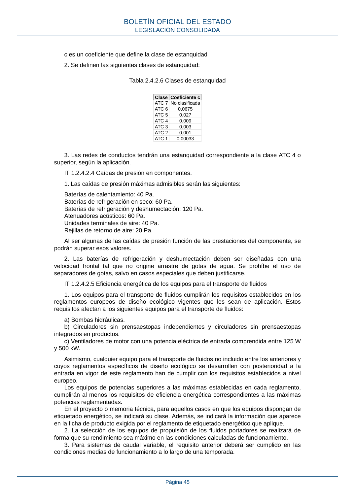
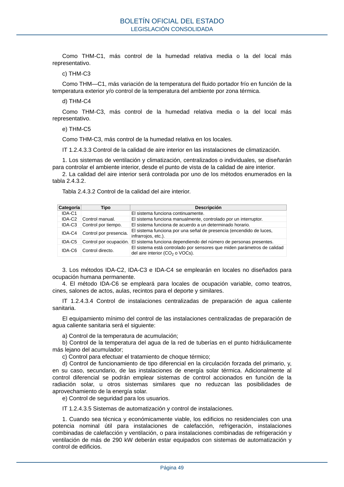
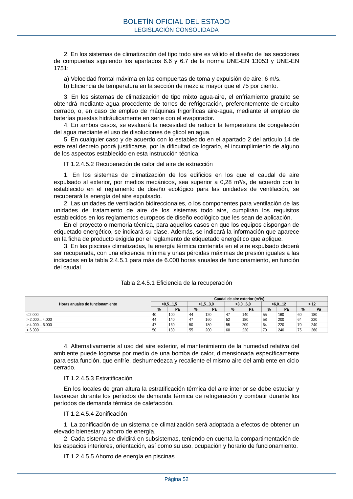

RITE · 1. El método de cálculo elegido para justificar el cumplimiento de esta opción tendrá en consideración los siguientes factores: · versión 2022-08-02 · capa asociada
Formatos: JSON compacto · Markdown · PDF fuente
Ámbito del documento · texto del ámbito · documento y tablas
ID técnico a0107 · PDF pág. 43-58 · jerarquía no validada por persona · contrastado con el literal de la página 43 (candidato tipográfico); no validado por persona · padre: raíz
1. El método de cálculo elegido para justificar el cumplimiento de esta opción tendrá en consideración los siguientes factores: consideración los siguientes factores: a) El diámetro exterior de la tubería. b) La temperatura del fluido, máxima o mínima. BOLETÍN OFICIAL DEL ESTADO LEGISLACIÓN CONSOLIDADA Página 43 c) Las condiciones del ambiente donde está instalada la tubería, como temperatura seca, mínima o máxima respectivamente, la velocidad media del aire y, en el caso de fluidos fríos, la temperatura de rocío y la radiación solar. d) La conductividad térmica del material aislante que se pretende emplear a la temperatura media de funcionamiento del fluido. e) El coeficiente superficial exterior, convectivo y radiante, de transmisión de calor, considerando la emitancia del acabado y la velocidad media del aire. f) La situación de las superficies, vertical u horizontal. g) la resistencia térmica del material de la tubería. 2. El método de cálculo se podrá formalizar a través de un programa informático siguiendo los criterios indicados en la norma UNE-EN ISO 12241. 3. El estudio justificará documentalmente, por cada diámetro de la tubería, el espesor empleado del material aislante elegido, las pérdidas o ganancias de calor, las pérdidas o ganancias de las tuberías sin aislar, la temperatura superficial, y las perdidas totales de la red. IT 1.2.4.2.2 Aislamiento térmico de redes de conductos 1. Los conductos y accesorios de la red de impulsión de aire dispondrán de un aislamiento térmico suficiente para que la pérdida de calor no sea mayor que el 4 % de la potencia que transportan y siempre que sea suficiente para evitar condensaciones. 2. Cuando la potencia útil nominal a instalar de generación de calor o frío sea menor o igual que 70 kW son válidos los espesores mínimos de aislamiento para conductos y accesorios de la red de impulsión de aire que se indican: a) Para un material con conductividad térmica de referencia a 10 °C de 0,040 W/(m.K), serán los siguientes: i. En interiores 30 mm. ii. En exteriores 50 mm. b) Para materiales de conductividad térmica distinta de la anterior, se considera válida la determinación del espesor mínimo aplicando las ecuaciones del apartado 1.2.4.2.1.2. c) El espesor mínimo de aislamiento de ramales finales de conductos de longitud menor de 5 metros se podrá reducir a 13 mm si existe impedimento físico demostrable de espacio. Para potencias mayores que 70 kW deberá justificarse documentalmente que las pérdidas no son mayores que las obtenidas con los espesores indicados anteriormente. 3. Las redes de retorno se aislarán cuando discurran por el exterior del edificio y, en interiores, cuando el aire esté a temperatura menor que la de rocío del ambiente o cuando el conducto pase a través de locales no acondicionados. 4. A efectos de aislamiento térmico, los aparcamientos se equipararán al ambiente exterior. 5. Los conductos de tomas de aire exterior se aislarán con el nivel necesario para evitar la formación de condensaciones. 6. Cuando los conductos estén instalados al exterior, la terminación final del aislamiento deberá poseer la protección suficiente contra la intemperie. Se prestará especial cuidado en la realización de la estanquidad de las juntas al paso del agua de lluvia. 7. Los componentes que vengan aislados de fábrica tendrán el nivel de aislamiento indicado por la respectiva normativa o determinado por el fabricante. IT 1.2.4.2.3 Estanquidad de redes de conductos 1. La estanquidad de la red de conductos se determinará mediante la siguiente ecuación: en la que: f representa las fugas de aire, en dm3/(s·m2) p es la presión estática, en Pa BOLETÍN OFICIAL DEL ESTADO LEGISLACIÓN CONSOLIDADA Página 44 c es un coeficiente que define la clase de estanquidad 2. Se definen las siguientes clases de estanquidad: Tabla 2.4.2.6 Clases de estanquidad ClaseCoeficiente c ATC 7No clasificada ATC 6 0,0675 ATC 5 0,027 ATC 4 0,009 ATC 3 0,003 ATC 2 0,001 ATC 1 0,00033 3. Las redes de conductos tendrán una estanquidad correspondiente a la clase ATC 4 o superior, según la aplicación. IT 1.2.4.2.4 Caídas de presión en componentes. 1. Las caídas de presión máximas admisibles serán las siguientes: Baterías de calentamiento: 40 Pa. Baterías de refrigeración en seco: 60 Pa. Baterías de refrigeración y deshumectación: 120 Pa. Atenuadores acústicos: 60 Pa. Unidades terminales de aire: 40 Pa. Rejillas de retorno de aire: 20 Pa. Al ser algunas de las caídas de presión función de las prestaciones del componente, se podrán superar esos valores. 2. Las baterías de refrigeración y deshumectación deben ser diseñadas con una velocidad frontal tal que no origine arrastre de gotas de agua. Se prohíbe el uso de separadores de gotas, salvo en casos especiales que deben justificarse. IT 1.2.4.2.5 Eficiencia energética de los equipos para el transporte de fluidos 1. Los equipos para el transporte de fluidos cumplirán los requisitos establecidos en los reglamentos europeos de diseño ecológico vigentes que les sean de aplicación. Estos requisitos afectan a los siguientes equipos para el transporte de fluidos: a) Bombas hidráulicas. b) Circuladores sin prensaestopas independientes y circuladores sin prensaestopas integrados en productos. c) Ventiladores de motor con una potencia eléctrica de entrada comprendida entre 125 W y 500 kW. Asimismo, cualquier equipo para el transporte de fluidos no incluido entre los anteriores y cuyos reglamentos específicos de diseño ecológico se desarrollen con posterioridad a la entrada en vigor de este reglamento han de cumplir con los requisitos establecidos a nivel europeo. Los equipos de potencias superiores a las máximas establecidas en cada reglamento, cumplirán al menos los requisitos de eficiencia energética correspondientes a las máximas potencias reglamentadas. En el proyecto o memoria técnica, para aquellos casos en que los equipos dispongan de etiquetado energético, se indicará su clase. Además, se indicará la información que aparece en la ficha de producto exigida por el reglamento de etiquetado energético que aplique. 2. La selección de los equipos de propulsión de los fluidos portadores se realizará de forma que su rendimiento sea máximo en las condiciones calculadas de funcionamiento. 3. Para sistemas de caudal variable, el requisito anterior deberá ser cumplido en las condiciones medias de funcionamiento a lo largo de una temporada. BOLETÍN OFICIAL DEL ESTADO LEGISLACIÓN CONSOLIDADA Página 45 4. Se justificará, para cada circuito, la potencia específica de los sistemas de bombeo, denominado SFP y definida como la potencia absorbida por el motor dividida por el caudal de fluido transportado, medida en W/(m³/s). 5. Se indicará la categoría a la que pertenece cada sistema, considerando el ventilador de impulsión y el de retorno, de acuerdo con la siguiente clasificación: a) Ventilador de aire de impulsión: Sistemas de acondicionamiento de aire SFP 4. Sistemas de ventilación simple SFP 3. b) Ventilador de aire de extracción: Sistemas de acondicionamiento de aire SFP 3. Sistemas de ventilación simple SFP 2. 6. Para los ventiladores, la potencia específica absorbida por cada ventilador de un sistema de climatización, será la indicada en la tabla 2.4.2.7. Tabla 2.4.2.7 Potencia específica de ventiladores CategoríaPotencia específica W/(m³/s) SFP 0 Wesp ≤ 300 SFP 1 300 < Wesp ≤ 500 SFP 2 500 < Wesp ≤ 750 SFP 3 750 < Wesp ≤ 1.250 SFP 4 1.250 < Wesp ≤ 2.000 SFP 5 2.000 < Wesp ≤ 3.000 SFP 6 3.000 < Wesp ≤ 4.500 SFP 7 Wesp > 4.500 7. Para las bombas de circulación de agua en redes de tuberías será suficiente equilibrar el circuito por diseño y, luego, emplear válvulas de equilibrado, si es necesario. IT 1.2.4.2.6 Eficiencia energética de los motores eléctricos. 1. La selección de los motores eléctricos se justificará basándose en criterios de eficiencia energética. 2. Los motores eléctricos cumplirán los requisitos establecidos en los reglamentos europeos de diseño ecológico vigentes que les sean de aplicación. En el proyecto o memoria técnica, para aquellos casos en que los equipos dispongan de etiquetado energético, se indicará su clase. Además, se indicará la información que aparece en la ficha de producto exigida por el reglamento de etiquetado energético que aplique. 3. Quedan excluidos los siguientes motores: para ambientes especiales, encapsulados, no ventilados, motores directamente acoplados a bombas, sumergibles, de compresores herméticos y otros. 4. La eficiencia deberá ser medida de acuerdo a la norma UNE-EN 60034-2. IT 1.2.4.2.7 Redes de tuberías. 1. Los trazados de los circuitos de tuberías de los fluidos portadores se diseñarán, en el número y forma que resulte necesario, teniendo en cuenta el horario de funcionamiento de cada subsistema, la longitud hidráulica del circuito y el tipo de unidades terminales servidas. 2. Se conseguirá el equilibrado hidráulico de los circuitos de tuberías durante la fase de diseño empleando válvulas de equilibrado, si fuera necesario. IT 1.2.4.2.8 Unidades de ventilación. Las unidades de ventilación cumplirán con los límites de rendimiento para unidades residenciales y no residenciales establecidos en el reglamento de diseño ecológico aplicable o la normativa que lo sustituya. En el proyecto o memoria técnica, para aquellos casos en que los equipos dispongan de etiquetado energético, se indicará su clase. Además, se indicará la información que aparece en la ficha de producto exigida por el reglamento de etiquetado energético que aplique. BOLETÍN OFICIAL DEL ESTADO LEGISLACIÓN CONSOLIDADA Página 46 IT.1.2.4.2.9 Emisores térmicos. Los emisores térmicos se dimensionarán para temperaturas de entrada en calefacción inferiores a 60 ºC y de entrada en refrigeración superiores a 7 ºC. IT 1.2.4.3 Control IT 1.2.4.3.1 Control de las instalaciones de climatización 1. Todas las instalaciones térmicas estarán dotadas de los sistemas de control automático necesarios para que se puedan mantener en los locales las condiciones de diseño previstas, ajustando los consumos de energía a las variaciones de la carga térmica. Así, en los edificios de nueva construcción, cuando sea técnica y económicamente viable, estarán equipados con dispositivos de autorregulación que regulen separadamente la temperatura ambiente en cada espacio interior o, en casos justificados, en una zona de calefacción o refrigeración seleccionada del conjunto del edificio. En los edificios existentes, se exigirá la instalación de este tipo de dispositivos en caso de que se sustituyan los generadores de calor, y solo para la autorregulación de las instalaciones de calefacción, cuando sea viable técnica y económicamente. En el caso de instalaciones dotadas con varios generadores de calor, si estos dan servicio al mismo espacio y se sustituye alguno de ellos, la obligación aplicará a estos espacios. Si los generadores son independientes y no dan servicio al mismo espacio el requisito se aplicará únicamente a los espacios que reciban el servicio de los generadores de calor sustituidos. Los dispositivos instalados como resultado de la aplicación de estas disposiciones deben: a) Permitir la adaptación automática de la potencia calorífica en función de la temperatura interior (y de parámetros adicionales opcionales); b) Permitir la regulación de la potencia calorífica en cada espacio interior (o zona), con arreglo a los parámetros de calefacción del espacio interior (o zona) en cuestión. Las soluciones que permiten regular de forma automática la temperatura, pero no a escala de espacio interior (o de zona), por ejemplo, la regulación automática a escala de vivienda, no cumplirían los requisitos. 2. El empleo de controles de tipo todo-nada está limitado a las siguientes aplicaciones: a) Límites de seguridad de temperatura y presión. b) Regulación de velocidad de ventiladores de unidades terminales. c) Control de la emisión térmica de generadores de instalaciones individuales. d) Control de la temperatura de ambientes servidos por aparatos unitarios, de potencia útil nominal menor o igual a 70 kW. e) Control del funcionamiento de la ventilación de salas de máquinas. 3. El rearme automático de los dispositivos de seguridad sólo se permitirá cuando se indique expresamente en estas Instrucciones técnicas. 4. Los sistemas formados por diferentes subsistemas deben disponer de los dispositivos necesarios para dejar fuera de servicio cada uno de estos en función del régimen de ocupación, sin que se vea afectado el resto de las instalaciones. 5. Las válvulas de control automático se seleccionarán de manera que, al caudal máximo de proyecto y con la válvula abierta, la pérdida de presión que se producirá en la válvula esté comprendida entre 0,6 y 1,3 veces la pérdida del elemento controlado. En instalaciones de caudal variable con potencia de generación térmica total superior a 70 kW, será necesario estabilizar la presión diferencial sobre la válvula de control para garantizar una temperatura adecuada. 6. La variación de la temperatura del agua en función de las condiciones exteriores, o para adecuar la generación a las condiciones ambientales, se hará en los circuitos secundarios de los generadores de calor de tipo estándar y en el mismo generador en el caso de generadores de baja temperatura y de condensación, hasta el límite fijado por el fabricante. BOLETÍN OFICIAL DEL ESTADO LEGISLACIÓN CONSOLIDADA Página 47 7. La temperatura del fluido refrigerado a la salida de una central frigorífica de producción instantánea se mantendrá constante, cualquiera que sea la demanda e independientemente de las condiciones exteriores, salvo situaciones que deben estar justificadas. 8. El control de la secuencia de funcionamiento de los generadores de calor o frío se hará siguiendo estos criterios: a) Cuando la eficiencia del generador disminuye al disminuir la demanda, los generadores trabajarán en secuencia. Al disminuir la demanda se modulará la potencia entregada por cada generador (con continuidad o por escalones) hasta alcanzar el valor mínimo permitido y parar una máquina; a continuación, se actuará de la misma manera sobre los otros generadores. Al aumentar la demanda se actuará de forma inversa. b) Cuando la eficiencia del generador aumente al disminuir la demanda, los generadores se mantendrán funcionando en paralelo. Al disminuir la demanda se modulará la potencia entregada por los generadores (con continuidad o por escalones) hasta alcanzar la eficiencia máxima; a continuación, se modulará la potencia de un generador hasta llegar a su parada y se actuará de la misma manera sobre los otros generadores. Al aumentar la demanda se actuará de forma inversa. 9. Para el control de la temperatura de condensación de la máquina frigorífica se seguirán los criterios indicados en los apartados 1.2.4.1.3 para máquinas enfriadas por aire y para máquinas enfriadas por agua. 10. Los ventiladores de más de 5 m3/s llevarán incorporado un dispositivo indirecto para la medición y el control del caudal de aire. 11. Las válvulas termostáticas deberán cumplir con la norma UNE EN 215. IT 1.2.4.3.2 Control de las condiciones termo-higrométricas 1. Los sistemas de climatización, centralizados o individuales, se diseñarán para controlar el ambiente interior desde el punto de vista termo-higrométrico. 2. De acuerdo con la capacidad del sistema de climatización para controlar la temperatura y la humedad relativa de los locales, los sistemas de control de las condiciones termohigrométricas se clasificarán, a efectos de aplicación de esta IT, en las categorías indicadas de la tabla 2.4.3.1 Tabla 2.4.3.1 Control de las condiciones termohigrométricas. Categoría Ventilación Calentamiento Refrigeración Humidificación Deshumidificación THM-C 0 x – – – – THM-C 1 x x – – – THM-C 2 x x – x – THM-C 3 x x x – (x) THM-C 4 x x x x (x) THM-C 5 x x x x x Notas: – no influenciado por el sistema x controlado por el sistema y garantizado en el local (x) afectado por el sistema pero no controlado en el local 3. El equipamiento mínimo de aparatos de control de las condiciones de temperatura y humedad relativa de los locales, según las categorías de la tabla 2.4.3.1., es el siguiente: a) THM-C1 Variación de la temperatura del fluido portador (agua o aire) en función de la temperatura exterior o control de la temperatura del ambiente por zona térmica. Además, en los sistemas de calefacción por agua en viviendas se instalará una válvula termostática en cada una de las unidades terminales de los locales principales de las mismas (sala de estar, comedor, dormitorios, etc.), siendo así necesario adaptar la instalación para mantener el caudal mínimo de la bomba. b) THM-C2 BOLETÍN OFICIAL DEL ESTADO LEGISLACIÓN CONSOLIDADA Página 48 Como THM-C1, más control de la humedad relativa media o la del local más representativo. c) THM-C3 Como THM—C1, más variación de la temperatura del fluido portador frío en función de la temperatura exterior y/o control de la temperatura del ambiente por zona térmica. d) THM-C4 Como THM-C3, más control de la humedad relativa media o la del local más representativo. e) THM-C5 Como THM-C3, más control de la humedad relativa en los locales. IT 1.2.4.3.3 Control de la calidad de aire interior en las instalaciones de climatización. 1. Los sistemas de ventilación y climatización, centralizados o individuales, se diseñarán para controlar el ambiente interior, desde el punto de vista de la calidad de aire interior. 2. La calidad del aire interior será controlada por uno de los métodos enumerados en la tabla 2.4.3.2. Tabla 2.4.3.2 Control de la calidad del aire interior. Categoría Tipo Descripción IDA-C1 El sistema funciona continuamente. IDA-C2 Control manual. El sistema funciona manualmente, controlado por un interruptor. IDA-C3 Control por tiempo. El sistema funciona de acuerdo a un determinado horario. IDA-C4 Control por presencia.El sistema funciona por una señal de presencia (encendido de luces, infrarrojos, etc.). IDA-C5 Control por ocupación.El sistema funciona dependiendo del número de personas presentes. IDA-C6 Control directo. El sistema está controlado por sensores que miden parámetros de calidad del aire interior (CO2 o VOCs). 3. Los métodos IDA-C2, IDA-C3 e IDA-C4 se emplearán en locales no diseñados para ocupación humana permanente. 4. El método IDA-C6 se empleará para locales de ocupación variable, como teatros, cines, salones de actos, aulas, recintos para el deporte y similares. IT 1.2.4.3.4 Control de instalaciones centralizadas de preparación de agua caliente sanitaria. El equipamiento mínimo del control de las instalaciones centralizadas de preparación de agua caliente sanitaria será el siguiente: a) Control de la temperatura de acumulación; b) Control de la temperatura del agua de la red de tuberías en el punto hidráulicamente más lejano del acumulador; c) Control para efectuar el tratamiento de choque térmico; d) Control de funcionamiento de tipo diferencial en la circulación forzada del primario, y, en su caso, secundario, de las instalaciones de energía solar térmica. Adicionalmente al control diferencial se podrán emplear sistemas de control accionados en función de la radiación solar, u otros sistemas similares que no reduzcan las posibilidades de aprovechamiento de la energía solar. e) Control de seguridad para los usuarios. IT 1.2.4.3.5 Sistemas de automatización y control de instalaciones. 1. Cuando sea técnica y económicamente viable, los edificios no residenciales con una potencia nominal útil para instalaciones de calefacción, refrigeración, instalaciones combinadas de calefacción y ventilación, o para instalaciones combinadas de refrigeración y ventilación de más de 290 kW deberán estar equipados con sistemas de automatización y control de edificios. BOLETÍN OFICIAL DEL ESTADO LEGISLACIÓN CONSOLIDADA Página 49 Dichos sistemas de automatización y control de edificios deberán ser capaces de: a) Monitorizar, registrar, analizar y permitir la adaptación del consumo de energía de forma continua; b) Efectuar una evaluación comparativa de la eficiencia energética del edificio, detectar las pérdidas de eficiencia de sus instalaciones técnicas e informar sobre las posibilidades de mejora de la eficiencia energética a la persona responsable de la instalación o de la gestión técnica del edificio; c) Permitir la comunicación con instalaciones técnicas conectadas y otros aparatos que estén dentro del edificio, así como garantizar la interoperabilidad con instalaciones técnicas del edificio de distintos tipos de tecnologías patentadas, dispositivos y fabricantes. Será considerado, a efectos de esta exigencia, la automatización y el control que tienen un impacto en la eficiencia energética del edificio, como los recogidos en la norma UNE-EN 15232-1. 2. Los edificios residenciales podrán estar equipados con lo siguiente: a) La funcionalidad de monitorización electrónica continua que mida la eficiencia de las instalaciones e informe a los propietarios o a los administradores del inmueble cuando esta disminuya significativamente y cuando sea necesario reparar la instalación, y b) Funcionalidades eficaces de control para optimizar la producción, la distribución, el almacenamiento y el consumo de energía. 3. Los sistemas de automatización y control que se instalen en los casos contemplados en los apartados 1 y 2, se adaptarán al tamaño o capacidad de la instalación, habida cuenta de las necesidades y de las características del edificio en las condiciones de uso previstas, determinando las capacidades de control óptimas en función del tipo de edificio, del uso previsto y de los posibles ahorros energéticos. Una vez instalado el sistema de automatización y control, será necesario realizar acciones de comprobación de que el sistema funciona con arreglo a sus especificaciones y acciones de ajuste, en su caso, en la instalación en condiciones de uso real. Los sistemas de automatización y control deberán configurarse para operar las instalaciones según regímenes de operación que permitan las condiciones de bienestar e higiene establecidas en el artículo 11 con el mínimo consumo de energía. Para ello se deberán tener en cuenta los periodos de inactividad del edificio, el uso de los espacios, los regímenes de operación en el punto de máximo rendimiento de los equipos y el máximo aprovechamiento de las energías renovables y residuales disponibles. Las indicaciones e instrucciones para la correcta operación del sistema de automatización y control deberán recogerse en el ‘‘Manual de Uso y Mantenimiento’’. IT 1.2.4.4 Contabilización de consumos. 1. Toda instalación térmica que dé servicio a más de un usuario dispondrá de algún sistema que permita el reparto de los gastos correspondientes a cada servicio (calor, frío y agua caliente sanitaria) entre los diferentes usuarios, en el caso del agua caliente sanitaria deberá ser un contador individual. El sistema previsto, instalado en el tramo de acometida a cada unidad de consumo, permitirá regular y medir los consumos, así como interrumpir los servicios desde el exterior de los locales. Las instalaciones térmicas que suministren calefacción o refrigeración a un edificio a partir de una instalación centralizada que abastezca a varios consumidores y a los titulares que reciben dicho suministro desde una red de calefacción o refrigeración urbana, definidas en el apéndice 1 de este Reglamento, cuando dichas instalaciones térmicas no dispongan de un sistema que permita el reparto de los gastos correspondientes a cada servicio (calor y frío) entre los diferentes consumidores, deberán cumplir con las obligaciones establecidas en la normativa que regule la contabilización de consumos individuales en instalaciones de edificios. Los clientes finales de los edificios abastecidos a partir de una red urbana de calefacción, refrigeración o agua caliente sanitaria, recibirán, por parte del titular de la red, contadores individuales, de precio razonable y asequible de acuerdo con los estándares del mercado, que reflejen con precisión su consumo real de energía. BOLETÍN OFICIAL DEL ESTADO LEGISLACIÓN CONSOLIDADA Página 50 Cuando se suministren calefacción, refrigeración o agua caliente sanitaria a un edificio a partir de una fuente central que abastezca varios edificios o de una red urbana de calefacción o refrigeración, se instalará un contador en el intercambiador de calor o punto de entrega. En las instalaciones todo aire, o de caudal de refrigerante variable, el sistema para el control de consumos por usuario será definido por el proyectista o el redactor de la memoria técnica en el propio proyecto, o en la memoria técnica de la instalación. Las instalaciones solares de más de 14 kW de potencia nominal, destinadas a dar cumplimiento a lo establecido en la sección HE4 del Código Técnico de la Edificación dispondrán de un sistema de medida de la energía final suministrada, con objeto de poder verificar el programa de gestión energética y las inspecciones periódicas de eficiencia energética especificados en la IT 3.4.3 y en la IT 4.2.1. En el caso de instalaciones solares con acumulación solar distribuida será suficiente la contabilización de la energía solar de forma centralizada en el circuito de distribución hacia los acumuladores individuales. El diseño del sistema de contabilización de energía solar debe permitir al usuario de la instalación comprobar de forma directa, visual e inequívoca el correcto funcionamiento de la instalación, de manera que este pueda controlar periódicamente la producción de la instalación. 2. Las instalaciones térmicas de potencia útil nominal mayor que 70 kW, en régimen de refrigeración o calefacción, dispondrán de dispositivos que permitan efectuar la medición y registrar el consumo de combustible y energía eléctrica, de forma separada del consumo debido a otros usos del resto del edificio. 3. Se dispondrán dispositivos para la medición de la energía térmica generada o demandada en centrales de potencia útil nominal mayor que 70 kW, en refrigeración o calefacción. Este dispositivo se podrá emplear también para modular la producción de energía térmica en función de la demanda. Cuando se disponga de servicio de agua caliente sanitaria se dispondrá de un dispositivo de medición de la energía en el primario de la producción y en la recirculación. 4. Las instalaciones térmicas de potencia útil nominal en refrigeración mayor que 70 kW dispondrán de un dispositivo que permita medir y registrar el consumo de energía eléctrica de la central frigorífica (maquinaria frigorífica, torres y bombas de agua refrigerada, esencialmente) de forma diferenciada de la medición del consumo de energía del resto de equipos del sistema de acondicionamiento. 5. Los generadores de calor y de frío de potencia útil nominal mayor que 70 kW dispondrán de un dispositivo que permita registrar el número de horas de funcionamiento del generador. 6. Las bombas y ventiladores de potencia eléctrica del motor mayor que 20 kW dispondrán de un dispositivo que permita registrar las horas de funcionamiento del equipo. 7. Los compresores frigoríficos de más de 70 kW de potencia útil nominal dispondrán de un dispositivo que permita registrar el número de arrancadas del mismo. 8. Los generadores de calor y de frío de potencia útil nominal mayor que 70 kW que dispongan de un suministro directo de energía renovable eléctrica dispondrán de un dispositivo que permita contabilizar dicha contribución de forma diferenciada al resto de su consumo eléctrico y, si es técnicamente viable, se contabilizará la contribución de energía renovable eléctrica producida por instalaciones de autoconsumo. Dicho dispositivo podrá permitir que se maximice el aprovechamiento energético de la energía renovable eléctrica haciendo uso de las capacidades de comunicación e interoperabilidad de las instalaciones técnicas conectadas y los sistemas de almacenamiento que puedan existir. IT 1.2.4.5 Recuperación de energía IT 1.2.4.5.1 Enfriamiento gratuito por aire exterior. 1. Los subsistemas de climatización del tipo todo aire, de potencia útil nominal mayor que 70 kW en régimen de refrigeración, dispondrán de un subsistema de enfriamiento gratuito por aire exterior. BOLETÍN OFICIAL DEL ESTADO LEGISLACIÓN CONSOLIDADA Página 51 2. En los sistemas de climatización del tipo todo aire es válido el diseño de las secciones de compuertas siguiendo los apartados 6.6 y 6.7 de la norma UNE-EN 13053 y UNE-EN 1751: a) Velocidad frontal máxima en las compuertas de toma y expulsión de aire: 6 m/s. b) Eficiencia de temperatura en la sección de mezcla: mayor que el 75 por ciento. 3. En los sistemas de climatización de tipo mixto agua-aire, el enfriamiento gratuito se obtendrá mediante agua procedente de torres de refrigeración, preferentemente de circuito cerrado, o, en caso de empleo de máquinas frigoríficas aire-agua, mediante el empleo de baterías puestas hidráulicamente en serie con el evaporador. 4. En ambos casos, se evaluará la necesidad de reducir la temperatura de congelación del agua mediante el uso de disoluciones de glicol en agua. 5. En cualquier caso y de acuerdo con lo establecido en el apartado 2 del artículo 14 de este real decreto podrá justificarse, por la dificultad de lograrlo, el incumplimiento de alguno de los aspectos establecido en esta instrucción técnica. IT 1.2.4.5.2 Recuperación de calor del aire de extracción 1. En los sistemas de climatización de los edificios en los que el caudal de aire expulsado al exterior, por medios mecánicos, sea superior a 0,28 m³/s, de acuerdo con lo establecido en el reglamento de diseño ecológico para las unidades de ventilación, se recuperará la energía del aire expulsado. 2. Las unidades de ventilación bidireccionales, o los componentes para ventilación de las unidades de tratamiento de aire de los sistemas todo aire, cumplirán los requisitos establecidos en los reglamentos europeos de diseño ecológico que les sean de aplicación. En el proyecto o memoria técnica, para aquellos casos en que los equipos dispongan de etiquetado energético, se indicará su clase. Además, se indicará la información que aparece en la ficha de producto exigida por el reglamento de etiquetado energético que aplique. 3. En las piscinas climatizadas, la energía térmica contenida en el aire expulsado deberá ser recuperada, con una eficiencia mínima y unas pérdidas máximas de presión iguales a las indicadas en la tabla 2.4.5.1 para más de 6.000 horas anuales de funcionamiento, en función del caudal. Tabla 2.4.5.1 Eficiencia de la recuperación Horas anuales de funcionamiento Caudal de aire exterior (m³/s) >0,5...1,5 >1,5...3,0 >3,0...6,0 >6,0...12 > 12 % Pa % Pa % Pa % Pa % Pa ≤ 2.000 40 100 44 120 47 140 55 160 60 180 > 2.000... 4.000 44 140 47 160 52 180 58 200 64 220 > 4.000... 6.000 47 160 50 180 55 200 64 220 70 240 > 6.000 50 180 55 200 60 220 70 240 75 260 4. Alternativamente al uso del aire exterior, el mantenimiento de la humedad relativa del ambiente puede lograrse por medio de una bomba de calor, dimensionada específicamente para esta función, que enfríe, deshumedezca y recaliente el mismo aire del ambiente en ciclo cerrado. IT 1.2.4.5.3 Estratificación En los locales de gran altura la estratificación térmica del aire interior se debe estudiar y favorecer durante los períodos de demanda térmica de refrigeración y combatir durante los períodos de demanda térmica de calefacción. IT 1.2.4.5.4 Zonificación 1. La zonificación de un sistema de climatización será adoptada a efectos de obtener un elevado bienestar y ahorro de energía. 2. Cada sistema se dividirá en subsistemas, teniendo en cuenta la compartimentación de los espacios interiores, orientación, así como su uso, ocupación y horario de funcionamiento. IT 1.2.4.5.5 Ahorro de energía en piscinas BOLETÍN OFICIAL DEL ESTADO LEGISLACIÓN CONSOLIDADA Página 52 1. La lámina de agua de las piscinas climatizadas deberá estar protegida con barreras térmicas contra las pérdidas de calor del agua por evaporación durante el tiempo en que estén fuera de servicio. 2. La distribución de calor para el calentamiento del agua y la climatización del ambiente de piscinas será independiente de otras instalaciones térmicas. IT 1.2.4.6 Aprovechamiento de energías renovables y residuales. IT 1.2.4.6.1 Contribución de energía renovable o residual para la producción térmica del edificio. 1. En los edificios nuevos o sometidos a reforma, con previsión de demanda térmica, una parte de las necesidades energéticas térmicas derivadas de esa demanda se cubrirán mediante la incorporación de sistemas de aprovechamiento de energía renovable, residual o procedente de procesos de cogeneración renovables. 2. Estos sistemas se diseñarán para alcanzar, al menos, la contribución renovable mínima para agua caliente sanitaria y para climatización de piscinas cubiertas establecida en la sección HE4 del Código Técnico de la Edificación, y los valores límite de consumo de energía primaria no renovable de acuerdo con lo establecido en la sección HE0, del Código Técnico de la Edificación. En la selección y diseño de la solución se tendrán en consideración los criterios de balance de energía y rentabilidad económica. 3. La aplicación de los coeficientes de paso de la producción de CO2 y de energía primaria, se realizará de acuerdo con lo establecido en el apartado 2 de la IT1.2.2. 4. En el supuesto de utilizar bombas de calor para cubrir las demandas de climatización, producción de agua caliente sanitaria o calentamiento de piscinas, para poder considerar parte de su aporte energético como energía renovable, deberán alcanzar un valor de rendimiento medio estacional (SPF) superior al indicado en la Decisión de la Comisión de 1 de marzo de 2013 por la que se establecen las directrices para el cálculo por los Estados miembros de la energía renovable procedente de las bombas de calor de diferentes tecnologías, conforme a lo dispuesto en el artículo 5 de la Directiva 2009/28/CE del Parlamento Europeo y del Consejo de 23 de abril de 2009 relativa al fomento del uso de energía procedente de fuentes renovables y por la que se modifican y se derogan las Directivas 2001/77/CE y 2003/30/CE. Este valor de rendimiento medio estacional (SPF) podrá ser modificado por actos delegados de la Comisión según se establece en el artículo 7 de la Directiva 2018/2001, de 11 de diciembre de 2018, incluyendo una metodología para calcular la cantidad de energías renovables utilizada en la refrigeración, la refrigeración urbana y para modificar el anexo VII de dicha directiva. 5. Los rendimientos medios estacionales a los que hace referencia el punto anterior, se determinarán siempre que sea posible mediante la norma correspondiente al tipo de máquina y perfil de uso y aplicados a la zona climática donde se ubique la instalación. IT 1.2.4.6.2 Contribución de calor renovable o residual para el calentamiento de piscinas al aire libre. Para el calentamiento del agua de piscinas al aire libre sólo podrán utilizarse fuentes de energía renovable o residual; para este último caso se tendrá en cuenta que el diseño no haya sido realizado exclusivamente para este fin. IT 1.2.4.6.3 Climatización de espacios abiertos. La climatización de espacios abiertos sólo podrá realizarse mediante la utilización de energías renovables o residuales. No podrá utilizarse energía convencional para la generación de calor y frío destinado a la climatización de estos espacios. IT 1.2. 4.7 Limitación de la utilización de energía convencional IT 1.2.4.7.1 Limitación de la utilización de energía convencional para la producción de calefacción centralizada. La utilización de energía eléctrica directa por «efecto Joule» para la producción de calefacción, en instalaciones centralizadas solo estará permitida en: BOLETÍN OFICIAL DEL ESTADO LEGISLACIÓN CONSOLIDADA Página 53 a) Las instalaciones con bomba de calor, cuando la relación entre la potencia eléctrica en resistencias de apoyo y la potencia eléctrica en bornes del motor del compresor, sea igual o inferior a 1,2. b) Los locales servidos por instalaciones que, usando fuentes de energía renovable o energía residual, empleen la energía eléctrica como fuente auxiliar de apoyo, siempre que el grado de cobertura de las necesidades energéticas anuales por parte de la fuente de energía renovable o energía residual sea mayor que dos tercios. c) Los locales servidos con instalaciones de generación de calor mediante sistemas de acumulación térmica, siempre que la capacidad de acumulación sea suficiente para captar y retener durante las horas de suministro eléctrico tipo «valle», definidas para la tarifa eléctrica regulada, la demanda térmica total diaria prevista en proyecto, debiéndose justificar en su memoria el número de horas al día de cobertura de dicha demanda por el sistema de acumulación sin necesidad de acoplar su generador de calor a la red de suministro eléctrico. IT 1.2.4.7.2 Locales sin climatización. Los locales no habitables no deben climatizarse, salvo cuando se empleen fuentes de energía renovables o energía residual. IT 1.2.4.7.3 Acción simultánea de fluidos con temperatura opuesta. 1. No se permite el mantenimiento de las condiciones termo-higrométricas de una zona térmica mediante: a) procesos sucesivos de enfriamiento y calentamiento; o b) la acción simultánea de dos fluidos con temperatura de efectos opuestos; 2. Se exceptúa de la prohibición anterior, siempre que se justifique la solución adoptada, en los siguientes casos, cuando: a) se realice por una fuente de energía gratuita o sea recuperado del condensador de un equipo frigorífico; b) sea imperativo para el mantenimiento de la humedad relativa dentro de los márgenes requeridos; c) se necesite mantener los locales acondicionados con presión positiva con respecto a los locales adyacentes; d) se necesite simultanear las entradas de caudales de aire de temperaturas antagonistas para mantener el caudal mínimo de aire de ventilación; e) la mezcla de aire tenga lugar en dos zonas diferentes del mismo ambiente. IT 1.2.4.7.4 Limitación del consumo de combustibles sólidos de origen fósil. Queda prohibida la utilización de combustibles sólidos de origen fósil en las instalaciones térmicas de los edificios de nueva construcción y en las instalaciones térmicas que se reformen en los edificios existentes. IT 1.2.4.8 Eficiencia energética general de la instalación térmica. La aplicación de las anteriores medidas de eficiencia energética, aprovechamiento de energías residuales y utilización de energías renovables deben evaluarse de forma global mediante la eficiencia energética general. Cuando se instale una instalación térmica de un edificio, se deberá evaluar la eficiencia energética general de toda la instalación. Cuando se sustituya o se mejore una instalación térmica de un edificio, se deberá evaluar la eficiencia energética general de la parte sustituida o modificada, y, en su caso, de toda la instalación sustituida o modificada. Dicha evaluación deberá quedar documentada e incluida en el proyecto o memoria técnica presentado ante el órgano competente de la comunidad autónoma. Asimismo, podrá ser objeto de inspección y, en caso de incumplimiento, de posible sanción. Los resultados de dicha evaluación se documentarán y se facilitarán al propietario del edificio. Se entenderá por eficiencia energética general de la instalación térmica la relación entre la demanda energética, (para el mantenimiento de rangos de temperatura adecuados y de suministro adecuado de ACS, de acuerdo con las dimensiones y uso del edificio), y el BOLETÍN OFICIAL DEL ESTADO LEGISLACIÓN CONSOLIDADA Página 54 consumo de energía necesario para cubrir los servicios de climatización, agua caliente sanitaria, ventilación, o una combinación de los mismos, considerando también los sistemas de automatización y control. Para la realización de dicha evaluación se podrán tener en cuenta los aspectos desarrollados mediante documento reconocido del RITE. IT 1.3 EXIGENCIA DE SEGURIDAD IT 1.3.1 Ámbito de aplicación El ámbito de aplicación de esta sección es el que se establece con carácter general para el RITE, en su artículo 2, con las limitaciones que se fijan en este apartado. IT 1.3.2 Procedimiento de verificación Para la correcta aplicación de esta exigencia en el diseño y dimensionado de la instalación térmica debe seguirse la secuencia de verificaciones siguiente: a) Cumplimiento de la exigencia de seguridad en generación de calor y frío del apartado 3.4.1. b) Cumplimiento de la exigencia de seguridad en las redes de tuberías y conductos de calor y frío del apartado 3.4.2. c) Cumplimiento de la exigencia de protección contra incendios del apartado 3.4.3. d) Cumplimiento de la exigencia de seguridad de utilización del apartado 3.4.4. IT 1.3.3 Documentación justificativa El proyecto o memoria técnica contendrá la siguiente documentación justificativa del cumplimiento de esta exigencia de seguridad: a) Justificación del cumplimiento de la exigencia de seguridad en generación de calor y frío del apartado 3.4.1. b) Justificación del cumplimiento de la exigencia de seguridad en las redes de tuberías y conductos de calor y frío del apartado 3.4.2. c) Justificación del cumplimiento de la exigencia de protección contra incendios del apartado 3.4.3. d) Justificación del cumplimiento de la exigencia de seguridad de utilización del apartado 3.4.4. IT 1.3.4 Caracterización y cuantificación de la exigencia de seguridad IT 1.3.4.1 Generación de calor y frío IT 1.3.4.1.1 Condiciones Generales 1. Los generadores de calor que utilizan combustibles gaseosos, incluidos en el ámbito de aplicación del Reglamento (UE) 2016/426 del Parlamento Europeo y del Consejo, de 9 de marzo de 2016, sobre los aparatos que queman combustibles gaseosos y por el que se deroga la Directiva 2009/142/CE tendrán la certificación de conformidad según lo establecido en dicho reglamento. 2. Los generadores de calor estarán equipados con un sistema de detección de flujo que impida el funcionamiento del mismo si no circula por él el caudal mínimo, salvo que el fabricante especifique que no requieren circulación mínima. 3. Los generadores de calor con combustibles que no sean gases dispondrán de: a) Un dispositivo de interrupción de funcionamiento del quemador en caso de retroceso de los productos de la combustión; b) Un dispositivo de interrupción de funcionamiento del quemador que impida que se alcancen temperaturas mayores que las de diseño, que será de rearme manual. 4. Los generadores de calor que utilicen biocombustible sólido tendrán: a) Un dispositivo de interrupción de funcionamiento del sistema de combustión en caso de retroceso de los productos de la combustión o de llama. Deberá incluirse un sistema que evite la propagación del retroceso de la llama hasta el silo de almacenamiento que puede ser BOLETÍN OFICIAL DEL ESTADO LEGISLACIÓN CONSOLIDADA Página 55 de inundación del alimentador de la caldera o dispositivo similar, o garantice la depresión en la zona de combustión; b) un dispositivo de interrupción de funcionamiento del sistema de combustión que impida que se alcancen temperaturas mayores que las de diseño, que será de rearme manual; c) un sistema de eliminación del calor residual producido en la caldera como consecuencia del biocombustible ya introducido en la misma cuando se interrumpa el funcionamiento del sistema de combustión. Son válidos a estos efectos un recipiente de expansión abierto que pueda liberar el vapor si la temperatura del agua en la caldera alcanza los 100 °C o un intercambiador de calor de seguridad; d) una válvula de seguridad tarada a 1 bar por encima de la presión de trabajo del generador. Esta válvula en su zona de descarga deberá estar conducida hasta sumidero. 5. Los generadores de calor por radiación, aparatos de generación de aire caliente y equipos de absorción de llama directa, así como cualquier otro generador que utilice combustibles gaseosos y esté incluido en el Reglamento (UE) 2016/426 del Parlamento Europeo y del Consejo, de 9 de marzo de 2016, deben cumplir con la reglamentación prevista en dicho reglamento. La evacuación de los productos de la combustión y la ventilación de los locales donde se instalen estos equipos cumplirán con los requisitos de la reglamentación de seguridad industrial vigente. 6. La instalación en espacios habitables de generadores de calor de hogar abierto para calefacción o preparación de agua caliente sanitaria, solo podrá realizarse si se cumple la reglamentación de seguridad Industrial vigente y además aquellos cuyo combustible sea el gas lo establecido en el Reglamento (UE) 2016/426 del Parlamento Europeo y del Consejo, de 9 de marzo de 2016. 7. En espacios destinados a almacenes, talleres, naves industriales u otros recintos especiales, podrán ser utilizados equipos de generación de calor de hogar abierto, o que viertan los productos de la combustión al local a calentar, siempre que se justifique que la calidad del aire del recinto no se vea afectada negativamente, indicándose las medidas de seguridad adoptadas para tal fin. 8. Los generadores de agua refrigerada tendrán, a la salida de cada evaporador, un presostato diferencial o un interruptor de flujo enclavado eléctricamente con el arrancador del compresor. 9. En las instalaciones solares térmicas el diseño de la instalación se realizará de manera que se asegure que no se produzcan daños en la instalación. Para evitarlo se deberán adoptar medidas de seguridad intrínseca, tales como un dimensionado suficiente del vaso de expansión que permita albergar todo el volumen del medio de transferencia contenido en los captadores, sistemas de vaciado y llenado automático, etc., sin perjuicio de que existan otros sistemas de protección. 10. Las calderas incluidas en el ámbito de aplicación del Reglamento de equipos a presión deberán cumplir los requisitos de seguridad establecidos en el citado reglamento. IT 1.3.4.1.2 Salas de máquinas IT 1.3.4.1.2.1 Ámbito de aplicación 1. Se considera sala de máquinas al local técnico donde se alojan los equipos de producción de frío o calor y otros equipos auxiliares y accesorios de la instalación térmica, con potencia superior a 70 kW. Los locales anexos a la sala de máquinas que comuniquen con el resto del edificio o con el exterior a través de la misma sala se consideran parte de la misma. 2. No tienen consideración de sala de máquinas los locales en los que se sitúen generadores de calor con potencia térmica nominal menor o igual que 70 kW o los equipos autónomos de climatización de cualquier potencia, tanto en generación de calor como de frío, para tratamiento de aire o agua, preparados en fábrica para instalar en exteriores. Tampoco tendrán la consideración de sala de máquinas los locales con calefacción mediante generadores de aire caliente, tubos radiantes a gas, o sistemas similares; si bien en los mismos se deberán tener en consideración los requisitos de ventilación fijados en la norma UNE EN 13.410. BOLETÍN OFICIAL DEL ESTADO LEGISLACIÓN CONSOLIDADA Página 56 3. Las salas de máquinas para centrales de producción de frío cumplirán con lo dispuesto en la reglamentación vigente que les sea de aplicación. 4. Las exigencias de este apartado deberán considerarse como mínimas, debiendo cumplirse, además, con la legislación de seguridad vigente que les afecte. IT 1.3.4.1.2.2 Características comunes de los locales destinados a sala de máquinas Los locales que tengan la consideración de salas de máquinas deben cumplir las siguientes prescripciones, además de las establecidas en la sección SI-1 del Código Técnico de la Edificación: a) no se debe practicar el acceso normal a la sala de máquinas a través de una abertura en el suelo o techo; b) las puertas tendrán una permeabilidad no mayor a 1 l/(s·m2) bajo una presión diferencial de 100 Pa, salvo cuando estén en contacto directo con el exterior; c) las dimensiones de la puerta de acceso serán las suficientes para permitir el movimiento sin riesgo o daño de aquellos equipos que deban ser reparados fuera de la sala de máquinas. d) las puertas deben estar provistas de cerradura con fácil apertura desde el interior, aunque hayan sido cerradas con llave desde el exterior. e) en el exterior de la puerta se colocara un cartel con la inscripción: «Sala de Máquinas. Prohibida la entrada a toda persona ajena al servicio». f) no se permitirá ninguna toma de ventilación que comunique con otros locales cerrados; g) los elementos de cerramiento de la sala no permitirán filtraciones de humedad; h) la sala dispondrá de un eficaz sistema de desagüe por gravedad o, en caso necesario, por bombeo; i) el cuadro eléctrico de protección y mando de los equipos instalados en la sala o, por lo menos, el interruptor general estará situado en las proximidades de la puerta principal de acceso. Este interruptor no podrá cortar la alimentación al sistema de ventilación de la sala; j) el interruptor del sistema de ventilación forzada de la sala, si existe, también se situará en las proximidades de la puerta principal de acceso; k) el nivel de iluminación medio en servicio de la sala de máquinas será suficiente para realizar los trabajos de conducción e inspección, como mínimo, de 200 lux, con una uniformidad media de 0,5; l) no podrán ser utilizados para otros fines, ni podrán realizarse en ellas trabajos ajenos a los propios de la instalación; m) los motores y sus transmisiones deberán estar suficientemente protegidos contra accidentes fortuitos del personal; n) entre la maquinaria y los elementos que delimitan la sala de máquinas deben dejarse los pasos y accesos libres para permitir el movimiento de equipos, o de partes de ellos, desde la sala hacia el exterior y viceversa; o) la conexión entre generadores de calor y chimeneas debe ser perfectamente accesible. p) en el interior de la sala de máquinas figurarán, visibles y debidamente protegidas, las indicaciones siguientes: i. instrucciones para efectuar la parada de la instalación en caso necesario, con señal de alarma de urgencia y dispositivo de corte rápido; ii. el nombre, dirección y número de teléfono de la persona o entidad encargada del mantenimiento de la instalación; iii. la dirección y número de teléfono del servicio de bomberos más próximo, y del responsable del edificio; iv. indicación de los puestos de extinción y extintores cercanos; v. Plano con esquema de principio de la instalación. IT. 1.3.4.1.2.3 Salas de máquinas con generadores de calor a gas. 1. Las salas de máquinas con generadores de calor a gas se situarán en un nivel igual o superior al semisótano o primer sótano; para gases más ligeros que el aire, se ubicaran preferentemente en cubierta. BOLETÍN OFICIAL DEL ESTADO LEGISLACIÓN CONSOLIDADA Página 57 2. Los cerramientos (paredes y techos exteriores) del recinto deben tener un elemento o






PDF fuente redistribuible: copia fiel enlazada en esta página (SHA256 verificado).